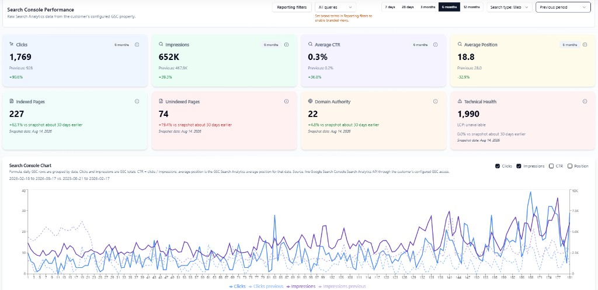

Search clicks nearly doubled in six months
Google Search Console for injurylawstars.com (Feb 18–Aug 17, 2026 vs prior period): 1,769 clicks vs 928, 652K impressions vs 467.9K, CTR 0.2% → 0.3%, average position 28.0 → 18.8.
- Clermont
/clermont/(GMB organic): 37 → 188 clicks - Homepage: ~167–187 → 215 clicks · 58.1K → 117.9K impressions
- Technical SEO
- Local / GBP
- Creating blog pages
- Indexation